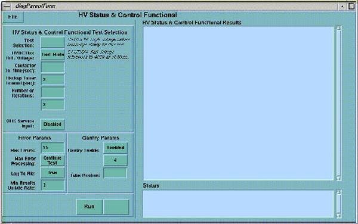

Proprietary to General Electric
Direction 5114045-800, Rev# 10
LightSpeed 4.X Service Information (Advanced)
Proprietary to General Electric |
Use this test to verify the backup timer operation (i.e., timer activates, timer counts down to zero and backup contactor de-energizes).
Illustration 1: Backup Timer Diagnostic Screen

The Gentry I/O Board contains the backup timer. The software loads the scan time +5% into the backup counter before the start of exposure. The extra 5% gives the backup contactor time to energize. The backup timer begins counting down when the system detects the HV ON or Exposure Command. If either of these conditions persist after the timer counts down to zero, it sends a level 1 interrupt to the CPU and disables the backup contactor.
The read and write verification requires the operation of the clock and clock select circuits. This diagnostic tests both the 488.28 Hz and 1953 Hz clocks. The diagnostic simulates an exposure, and verifies that the circuit generates a backup timer interrupt.
The system posts a test status message to the screen while it runs the corresponding test.
The Backup Timer Timeout defaults to three seconds, which should provide enough time to verify operation of the backup timer.
Select [DIAGNOSTICS] .
Select [X-RAY GENERATION] .
Select [BACK-UP TIMER.]
Select [RUN.]
The results window indicates the progress of the test, and not the state of the hardware.
The screen information updates one line at a time, as each step completes.
If a failure occurs, the system posts an inverted video error message indicating a test abort after the failing step.
| NOTE: | Failure to read the correct rail voltage does not cause test suspension. |